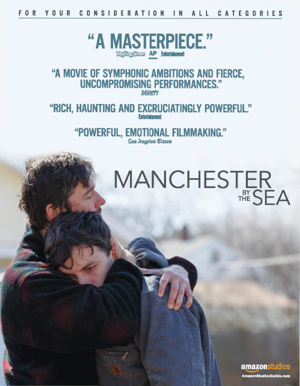

'A Non-Fictitious Account'
Suddenly, I was awaken by a loud buzzing transient noise so discrete;
My ears were ringing and my heart skipped a beat;
They were visible, the smoke was rising from the pits of darkness.
I felt suffocation, closed windows, extinguished lights, regulated fan,
I went out ….
I seek Siddhartha, saw the dust luminate by light shimmering from his room;
But a robust lock lay guarded the door clip, he must’ve gone.
I saved my breath and ran, descended twice the steps of stairs at a time;
‘Vos hafpahning?’ asked a white man in shorts, ‘Aporkalypse’ I hurriedly uttered;
The callous man showed me tongue, took out his phonite and tapped.
Finally, I was out in gasps stricken by an infrastructure upfront filled with pure milky fog;
The men in blue within were coming out with grins;
A denizen pointing at a key stuck on a dried out twig.
Grim-faced, I made to entrée of the mediocre brasserie;
Dipped some dal and forced some spinnached potato on plate rather reluctantly.
‘Heya, Brah! Ve’yo Mates?’ uttered the usual diner, ‘I do not know’ hesitated I;
‘What about the gas, did it? On our wing? a change in his tone;
Its ascendency fulfilled an affirmation, he added ‘Makes my tonsilius worse, already.’
It was dark, the heat wave on its peak;
I gazed the details of the big translucent windows on the wall,
And noticed the reflection of my company;
Briefly, I realized that sooner or later I’ll have to -
Return towards that nebulous haze.
- Date: 22 Mar, 2017

Silence (2016)
Dir: Martin Scorsese
Martin Scorsese is been working on Silence for 28-years, it’s his passion project. Scorsese was given the book of Shūsaku Endō’s ‘Silence’ as a gift by Archbishop Paul Moore after a screening of ‘The Last Temptation of Christ’ and Scorsese read it a year later in Japan while he was working on Akira Kurosawa’s Dreams. This film was so close to Martin personally due to his real life dilemma between faith and doubt, he wanted to become a priest in younger age before he started directing that he joined a preparatory school but unfortunately failed in trails, since then he’s been searching for meaning about God and religion. All these times until 2016, Scorsese studied its aspects and didn’t start making it tell he felt that he’s closer to understanding it. And the result, we get a breathtakingly beautiful film with a magnificent screenplay - that seems to be written after extensive research that it reads like a book with each line so fascinating ... Read More
- Genres:
- Drama | History | Adventure
The Little Prince (1943)
by Antoine de Saint-Exupéry
Drawings are a way of imparting ambiguous knowledge depending on how an observer interprets it and which suits the abstract thinking of a kid. Thus author uses his sketches as illustrations to make the narrator feel like a child. It’s also narrated that how adults in their so pragmatic worlds with dogmas and notions can’t understand the mysterious beauty in the abstract art of a child. ... Read More
- Finished: Jan 29, 2017
- Genres:
- Classics | Childrens | Fantasy
Logan (2017)
Dir: James Mangold
"Nature made me a freak. Man made me a weapon. And God made it last too long." ... Read More
- Genres:
- Thriller | Drama
Unforgiven (1992)
Dir: Clint Eastwood
This is the last movie to remember that legendary classic Westerns by ... Read More
- Genres:
- Western | Drama
Art 101: Understanding Paintings
If one is curious to know what art is? this post would be the first steps towards understanding some of the most sublime masterpieces of the world that helps one realize more deeper aspects of life. ... Read More
- Date: Mar 13, 2017
Trainspotting (1996)
Dir: Danny Boyle
"Choose life. Choose a job. Choose a career. Choose a family. Choose a fucking big television, Choose washing machines, cars, compact disc players, and electrical tin can openers. Choose good health, low cholesterol and dental insurance. Choose fixed-interest mortgage repayments. Choose a starter home. Choose your friends. Choose leisure wear and matching luggage. Choose a three piece suite on hire purchase in a range of fucking fabrics. Choose DIY and wondering who the fuck you are on a Sunday morning. Choose sitting on that couch watching mind-numbing spirit-crushing game shows, stuffing fucking junk food into your mouth. Choose rotting away at the end of it all, pishing your last in a miserable home, nothing more than an embarrassment to the selfish, fucked-up brats you have spawned to replace yourself. Choose your future. Choose life . . . But why would I want to do a thing like that? I chose not to choose life: I chose something else. And the reasons? There are no reasons." ... Read More
- Genres:
- Drama | Comedy

Moonlight (2016)
Dir: Barry Jenkins
" I should have cried too much. Sometimes I feel like I'm just gonna turn into drops. " ... Read More
- Genres:
- Drama

Hacksaw Ridge (2016)
Dir: Mel Gibson
So intense, gripping and touching. Hacksaw Ridge is a true story of American Army Medic Desmond T. Doss, the conscientious objector who, at the Battle of Okinawa in WWII, won the Medal of Honour for his incredible bravery and regard for his fellow soldiers. I totally loved Mel Gibson’s ‘Braveheart’ and is one of my favourite films of all time and was expecting something that terrific. ... Read More
- Genres:
- War | History | Drama
Shakespeare in Love (1998)
Dir: John Madden
This is not an accurate portrayal of one of the greatest writer in English language - world’s preeminent dramatist William Shakespeare; but is a romantic comedy at Elizabethan era with quite accurate historical background. Here, Shakespeare (Joseph Fiennes) an out of cash and inspiration - play writer falls in love with a noble woman Viola De Lesseps (Gwyneth Paltrow) and is inspired to create ‘Romeo and Juliet’. ... Read More
- Genres:
- Drama | Romance | Historical-Fiction | Comedy
Eastern Promises (2007)
Dir: David Cronenberg
An Arthouse mystery accomplished with criminal history and flourished by Russian culture, language and identity. The movie is themed on Russian mafia, agency and culture set in England. It’s about manipulation of identity in collectivism and illusion of destiny. I haven’t seen any movie of David Cronenberg before; he is so effective in blending art with style, violence and diverse values inherited by people within ... Read More
- Genres:
- Crime | Mystery | Thriller

Manchester by the Sea (2016)
Dir: Kenneth Lonergan
This was so touching, poignant and utterly fascinating. I wasn't just watching it, I felt totally into it. These can be easily the best performances of this year to say at least; Casey Affleck, Lucas Hedges, Michelle Williams and Kyle Chandler delivers humongous acts. ... Read More
- Genres:
- Drama
Winter's Bone (2010)
Dir: Debra Granik
This was excellent, so gripping, gritty, touching as well as inspiring with all the potential of a Western. Jennifer Lawrence is in her best, a totally Oscar-worthy performance by her side even John Hawkes was great as a supporting actor. The overall casting was just great - everyone looked like real village people including child actors as well; even the soundtrack had some good country music. The dialogues were written and delivered splendidly. ... Read More
- Genres:
- Drama | Mystery | Western | Suspense

CURRENTLY READING


FAVOURITE BOOK [2016]

MOVIE OF THE YEAR [2017]
FOLLOW ME

Favourite Writers

OSCAR WILDE

FRANZ KAFKA

LOIS LOWRY

GEORGE ORWELL

WILLIAM GOLDING

HOMER

JACK KEROUAC
LAURA HILLENBRAND

JOSEPH CONRAD

J.D. SALINGER

NICHOLAS SPARKS

KAHLIL GIBRAN